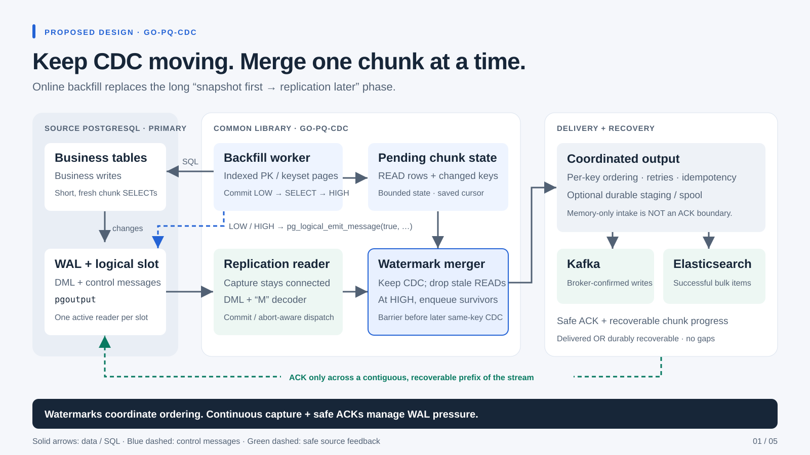
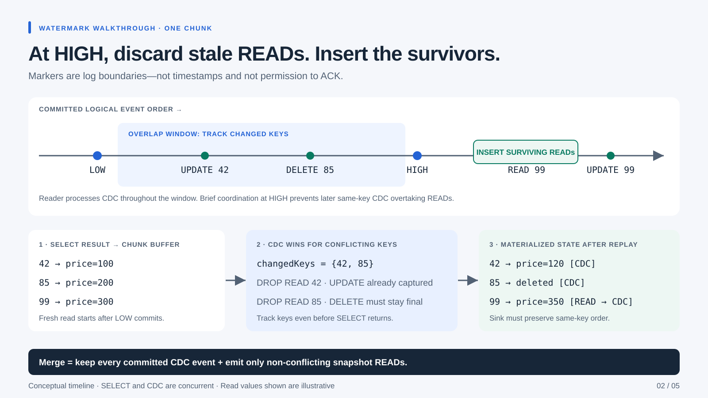

CONTROL PROTOCOL · PG_LOGICAL_EMIT_MESSAGE
A small WAL message joins two independent readers.
Write on a normal SQL connection. Receive on the already-connected replication stream.
1 · SOURCE: EMIT AN IDENTIFIABLE MARKER
SELECT pg_logical_emit_message(
true,
'go-pq-cdc.snapshot.high.v1',
'{"connector_id":"catalog-es",
"snapshot_id":"s1", "generation":3,
"chunk_id":7, "table_oid":12345}'
);
Transactional: commit the marker in its own short transaction. Rollback must not close a window.
No watermark table: small control payload goes directly into WAL. No business-row mutation.
2 · READER: DECODE, ROUTE, COORDINATE
START_REPLICATION ... ( proto_version '2', publication_names 'catalog', messages 'true', streaming 'true' );
M → optional streamed XID → flags → message LSN → prefix → payloadCORRECTNESS · ORDERING + RECOVERY
Receiving a marker is not enough. Recovery must be safe.
Three independent boundaries: transaction commit, same-key output order, and recoverable progress.
A · CAPTURE / MERGE
Do not emit stale READs.
- Track conflicting keys while a chunk is pending—even if SELECT has not returned.
- At HIGH, enqueue surviving READs before later same-key CDC.
- Handle DELETE, old/new PKs and table-level TRUNCATE explicitly.
- Full-row/upsert or reconstruction is needed when UPDATE arrives before READ.
B · DURABILITY / FEEDBACK
Do not ACK volatile state.
- Source feedback covers a contiguous recoverable prefix, not latest received WAL.
- Output must be delivered or durably staged, with enough state to resume the merge.
- Advance the backfill cursor only when recovery cannot skip unfinished output.
- At-least-once delivery: replay-safe IDs and idempotent sinks remain necessary.
C · FAILURE / CAPACITY
Bound pressure; retry safely.
- Unknown or old generation → ignore safely; retry pending work with fresh reads.
- SELECT fails after LOW → expire / abandon the window and retry.
- HIGH races with task result → wait for the matching chunk; do not close early.
- Sink or spool full → backpressure. WAL retention can grow again.
Source health: slot active, confirmed progress, retained WAL, disk headroom. Pipeline health: buffer age, pending chunks, sink lag.
DECISION · BENEFITS, COSTS, IMPLEMENTATION
Prefer online backfill for large, write-heavy clusters.
Keep the consistent initial mode for workloads that need a single snapshot boundary.
PROS
Lower source risk; faster operational recovery.
- No planned inactive-slot phase: CDC capture continues throughout backfill.
- Less prolonged WAL pinning: safe feedback can advance while rows are scanned.
- Short chunk reads: avoids a whole-job MVCC transaction and its prolonged vacuum horizon.
- Resumable / repeatable: checkpointed keyset pages support restart and selective backfill.
- Small control overhead: logical markers avoid a dedicated watermark table.
CONS / LIMITS
More protocol complexity; no magic capacity fix.
- Not one global T₀ view: chunks observe different times; CDC resolves concurrent changes.
- Harder implementation: marker decoding, windows, commit gates and durable checkpoints.
- Key + payload constraints: stable indexed PKs; PK changes, TOAST, filters and DDL need policy.
- Sink coupling: same-key ordering, retry behavior and bootstrap upserts must be correct.
- Capacity still matters: slow sinks, large transactions or buffer limits can grow retained WAL.
Opt-in mode → M decoder → window merger → ordered sink / safe feedback → failure + sustained-write tests.